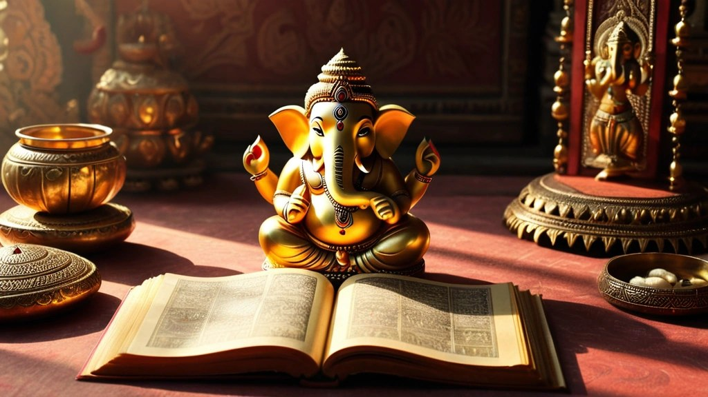

प्रश्नों से शुरू हुई एक यात्रा
बचपन में घर में गणपति अथर्वशीर्ष का पाठ होता था। एक बालक बार-बार पूछता था: यह गणेश विद्या क्या है? गणेशजी को हाथी की सूँड क्यों? हम घंटी बजाते हैं, फूल चढ़ाते हैं, इससे होता क्या है?
उत्तर मिलता था, "ऐसा ही है, पूजा करो।" आचार्य उपेंद्रजी बताते हैं कि यही अधूरे उत्तर उनकी आध्यात्मिक खोज की शुरुआत बने।
वे कहते हैं कि "श्रद्धा है तो करो", इसी वाक्य के नाम पर बहुत-सी अंधश्रद्धा (blind faith) भी हमारे जीवन में आ जाती है। पूजा-पाठ गलत नहीं है, पर उसके पीछे की समझ ज़रूरी है।
क्या आपके मन में भी कभी ऐसे प्रश्न उठे, जिनका उत्तर किसी ने नहीं दिया?
देवताओं के रूप: प्रतीकों की भाषा
खोजते-खोजते एक बात स्पष्ट हुई। शास्त्र स्वयं कहते हैं:
साधकानां हितार्थाय ब्रह्मणो रूपकल्पना।
"निराकार ब्रह्म के ये रूप साधक के कल्याण के लिए रचे गए हैं।"
(रामपूर्वतापनीयोपनिषद् १.७)
हम निराकार को देख नहीं सकते, इसलिए उसे साकार रूप में समझाया गया।
गणपति का बड़ा पेट मोदक खाने से नहीं बना। वह सिखाता है कि मुझे अपने सुख-दुख पचाना आना चाहिए। गणपति विवेक-बुद्धि के प्रतीक हैं, और उनका वाहन चूहा हमारी वासनाएँ और कामनाएँ हैं, जो हमारा समय खाती हैं।
विवेक-बुद्धि ही इन इच्छाओं को सही दिशा में ले जा सकती है। जब प्रतीक समझ में आ जाता है, तब उसका उद्देश्य पूरा होता है।

मूर्ति-पूजा कब तक?
गीता का एक श्लोक इसका उत्तर देता है:
बहूनां जन्मनामन्ते ज्ञानवान्मां प्रपद्यते।
वासुदेवः सर्वमिति स महात्मा सुदुर्लभः॥
"जिसे सबमें ईश्वर दिखने लगे, वह महात्मा है, और ऐसा व्यक्ति अत्यंत दुर्लभ है।"
(श्रीमद्भगवद्गीता ७.१९)
सबमें ईश्वर देखने का अर्थ है शत्रु में भी, बेलन लेकर खड़ी सास या बहू में भी, यहाँ तक कि घर में आए चोर में भी।
जब तक यह अवस्था नहीं आती, तब तक मूर्ति-पूजन आवश्यक है। आचार्यजी इसे एक "प्रैक्टिस मैच" कहते हैं। असली सेवा जीवित मूर्तियों की, यानी लोगों की करनी है। सच्चा अन्नदान और वस्त्रदान जनता को देना है; पत्थर तो केवल माध्यम था।
अनन्याश्चिन्तयन्तो मां ये जनाः पर्युपासते।
तेषां नित्याभियुक्तानां योगक्षेमं वहाम्यहम्॥
"जो लोग अनन्य भाव से मेरा चिंतन करते हुए मेरी उपासना करते हैं, उन नित्य मुझसे जुड़े हुए भक्तों का योगक्षेम मैं स्वयं वहन करता हूँ।"
(श्रीमद्भगवद्गीता ९.२२)
'पर्युपासते' का अर्थ है परमेश्वर के निकट बैठना, और वह परमेश्वर लोगों के रूप में है। अच्छा उद्यमी अच्छा उत्पाद देकर लोगों की सेवा करे, यही उसकी पूजा है। भगवान कहते हैं कि तुम्हारे जीते जी तुम्हारा योगक्षेम मैं वहन करूँगा।
घर में चोर आया: कौन-सा पाठ है?
एक पुलिस इंस्पेक्टर ने पूछा, "यदि सबमें वासुदेव है, तो क्या आरोपी को छोड़ दें?" आचार्यजी का उत्तर था, नहीं। उसे पुलिस के हवाले करना है, पर साथ में यह भी देखना है कि ईश्वर इस घटना से कौन-सा पाठ सिखाने आया।
शायद मैंने भी कभी चोरी की थी, समय की चोरी। आठ घंटे का वेतन लिया और दो घंटे गपशप में बिताए। या शायद देवी बता रही हैं कि मुझे कमाना तो आता है, पर धन संभालना नहीं आता।
आचार्य जी कहते हैं कि इसमें कुछ पाठ ज़रूर है, और जिस दिन यह बात समझ में आने लगती है, उस दिन 'वासुदेव सर्वम् इति' भी समझ में आने लगता है।
आपके जीवन में जो अप्रिय घटनाएँ हुईं, उनमें आपके लिए कौन-सा पाठ छिपा था?
"काली का खंडन करो"
रामकृष्ण परमहंस काली की पूजा करते थे, फिर भी कहते रहे, "मुझे अनुभूति नहीं हो रही।" उनके गुरु तोतापुरी ने उत्तर दिया, "काली का खंडन करोगे, तब काली प्राप्त होगी।"
इसका अर्थ मूर्ति तोड़ना नहीं, मूर्ति के पार देखना है। साकार और निराकार दोनों एक साथ दिखने चाहिए। जो दो जीवित शरीरों से अच्छा या बुरा बनकर प्रकट होता है, मृत्यु के बाद दोनों शरीरों से कुछ प्रकट नहीं होता। वही प्रकट होने वाली निराकार सत्ता ही जानने योग्य है। वही अध्यात्म है।
दुर्गा सप्तशती में भी देवी कहती हैं, "ये सब मुझसे भिन्न नहीं, मैं ही एक हूँ।"
तीन देवियाँ, तीन गुण
दुर्गा सप्तशती में तीन देवियाँ प्रकट होती हैं: महाकाली, महालक्ष्मी और महासरस्वती। ये गीता के चौदहवें अध्याय में बताए गए तीन गुणों के रूप हैं।
संस्कृत में 'गुण' का एक अर्थ है डोरी। ये तीन डोरियाँ हैं जो हमें बाँधती हैं। सत्त्वगुण भी बाँधता है; सोने की जंजीर भी जंजीर ही है। ज्ञान से भी आसक्ति हो जाए, तो आचार्यजी हँसकर कहते हैं, अगला जन्म पुस्तकालय में होगा!
- महासरस्वती: सत्त्व, श्वेत रंग। ज्ञान, विवेक, शांति।
- महालक्ष्मी: रजस, लाल रंग। क्रिया, भाग-दौड़, "खून-पसीना एक करना"।
- महाकाली: तमस, काला रंग। विश्राम, संहार, रक्षा।
किसी एक गुण से जीवन नहीं चलता। ज्ञान के लिए सत्त्व, कर्म के लिए रजस, और विश्राम या संहार के लिए तमस चाहिए। प्रश्न केवल यह है कि किस समय कौन-सा गुण प्रधान हो।
इसीलिए अकेली देवी अधूरी मानी जाती है।
केवल तमस हो तो वासना, आलस्य और हिंसा। केवल रजस हो तो स्वार्थ और सत्ता की भूख। और केवल सत्त्व हो तो क्रिया ही बंद, "जो होना है होने दो"।
आपके जीवन में इस समय कौन-सा गुण सबसे अधिक हावी है?
तीन गुणों से चार वर्ण
भगवान कहते हैं:
चातुर्वर्ण्यं मया सृष्टं गुणकर्मविभागशः।
"गुण और कर्म के विभाग के अनुसार चारों वर्णों की रचना मैंने की है।"
(श्रीमद्भगवद्गीता ४.१३)
ध्यान दीजिए, उन्होंने 'जाति' नहीं, 'वर्ण' कहा है। 'कास्ट' शब्द विदेशी 'casta' से आया और हम पर थोपा गया। हमारा समाज गुणप्रधान था, और वर्ण बदले जा सकते हैं।
आचार्यजी इसे रंगों से समझाते हैं:
- ब्राह्मण, श्वेत: जिसने बुद्धि से ट्रैफिक सिग्नल जैसी व्यवस्था बनाई, और स्वयं भी उसका पालन करता है।
- क्षत्रिय, गुलाबी (श्वेत + लाल): जो उस व्यवस्था से प्रभावित होकर उसे लागू करवाता है, और बदले में थोड़ा सम्मान और धन चाहता है।
- वैश्य, भूरा (लाल + काला): जिसे क्रिया, धन और सत्ता भायी, पर ब्राह्मण का विचार नहीं लिया।
- शूद्र, काला: सेवक-वृत्ति, जो मालिक के जाते ही चाय पीने चली जाती है। यह वृत्ति किसी भी देश में, किसी में भी आ सकती है।
यह न अच्छा है, न बुरा। मंदिर हो या इमारत, हर संस्था को चारों चाहिए। सब वास्तुकार बनें तो घर कागज़ पर रहेंगे; सब कारीगर बनें तो न योजना होगी, न सामग्री। तब हम फिर गुफावासी बन जाएँगे।
श्रीराम ने हनुमान से पूछा: हमारा नाता क्या है?
यह कथा पूरे विवाद का उत्तर है। हनुमानजी ने तीन स्तरों पर उत्तर दिया।
- १द्वैत (शरीर के स्तर पर): "आप मेरे स्वामी हैं और मैं आपका दास। मैं अपनी मर्यादा जानता हूँ।"
- २विशिष्टाद्वैत (मन-बुद्धि के स्तर पर): "आप संपूर्ण हैं, तो मैं आपका अंश हूँ। आप समुद्र हैं, तो मैं एक बूँद हूँ, पर हम जैसी बूँदों से ही आपका समुद्र बनता है। आप अग्नि हैं, तो मैं चिंगारी हूँ।"
- ३अद्वैत (आत्मा के स्तर पर): "आप और मैं बिलकुल समान हैं, हम वही एक आत्मा हैं।"
आचार्यजी यही प्रबोधन चारों वर्णों के लोगों के बीच करते हैं। सेवक की भूमिका में हो, तो ठीक से सेवा करो। पर सेवक जीवन भर सेवक ही रहे, ऐसा नहीं है। तुम भी मालिक बन सकते हो; बस मालिक बनो तो अच्छे अन्नदाता बनो।
मनुस्मृति को गुणों से पढ़िए
मनुस्मृति के कुछ वचनों पर बड़ा विवाद है, जैसे शूद्र वेद सुने तो उसके कानों में उबलता तेल डालो। आचार्यजी पूछते हैं, क्या मनु ऐसा उल्टा लिखेंगे?
वे बताते हैं कि यहाँ बात शूद्र वृत्ति की है, किसी समाज की नहीं। यह वृत्ति ब्राह्मण के मन में भी आ सकती है। अर्थ है: ऐसी वृत्ति वाले को वेद-विद्या मत दो, वह उसे मारण, मोहन, वशीकरण जैसी काली विद्या बना देगा। और ऐसी वृत्ति वाला राजा देश का नुकसान ही करेगा।
"हम पिछड़े हैं" वाला स्पंदन
अगस्त्य नाड़ी में आचार्यजी के लिए कहा गया है कि चार वर्णों को एक करने का कार्य उनका है। उनका संदेश है:
- यदि समाज बार-बार "हम पिछड़े हैं" का स्पंदन भेजेगा, तो देश आगे नहीं बढ़ सकता।
- राजा सुविधा दे, तो लो; वह तुम्हारा प्रारब्ध है। पर गुरु के पास 'अहं ब्रह्मास्मि' सीखने आए, तो भीतर ब्रह्मभाव जगेगा; फिर पिछड़ापन कैसा?
- आज यह एक राजनीतिक समस्या है। दो हज़ार छात्रों के लिए दो सौ सीटें बनाई जाती हैं, और चुनाव से पहले हमें जाति के नाम पर लड़ाया जाता है।
गुरु को आपत्ति आरक्षण से नहीं है। आपत्ति तब है जब कोई सुविधा लेकर भी पढ़ाई न करे, सड़क पर गड्ढे छोड़े या भ्रष्टाचार करे। क्योंकि सड़क पर जो मरेगा, उसका हलाहल गुरु को पीना पड़ता है।
गुणवृत्ति विरोध: टकराव क्यों होता है
भगवद्गीता का चौदहवाँ अध्याय और पतंजलि योगसूत्र बताते हैं कि तीनों गुण एक-दूसरे के विरोध में रहते हैं। इसे गुणवृत्ति विरोध कहते हैं। आप एक साथ सो भी रहे हों और दौड़ भी रहे हों, ऐसा नहीं हो सकता।
घर में ज़्यादा काम करो तो कहेंगे "आराम करो", और आराम करो तो कहेंगे "कुछ काम करो"। समाज में भी यही होता है। ज्ञान का अहंकार जल्दी आता है, और पीड़ा सदा नीचे वाले को होती है।
इसका समाधान संतों ने दिया: "गुणातीत हो रे बाबा तू।" गुणों से ऊपर उठो, तो इस टकराव से भी ऊपर उठ जाओगे।
धर्मों में भी तीन गुण
आचार्यजी के अनुसार सनातन का अर्थ है शाश्वत, प्रकृति के आदिकाल से चले आ रहे नियम। उसमें सभी धर्म आते हैं।
हिंदू, जैन, सिख और बौद्ध परंपराएँ सत्त्व-प्रधान मानी गई हैं: अहिंसा, क्षमा, दया। पर इसी क्षमा के कारण हम अपराध सहते रहते हैं। भविष्य पुराण के हवाले से वे कुछ समाजों को रजस-प्रधान और कुछ को तमस-प्रधान बताते हैं।
उनका निष्कर्ष स्पष्ट है कि केवल सात्विक हिंदू बनकर काम नहीं चलेगा, हमें रजस और तमस शक्तियों को भी बढ़ाना होगा।
श्रीकृष्ण ने शिशुपाल के सौ अपराधों के बाद चक्र चलाया। तो क्या हम सौ अपराधों तक प्रतीक्षा करें? माँ को भी कभी-कभी डाँटना आना चाहिए:
लालयेत् पञ्च वर्षाणि दश वर्षाणि ताडयेत्।
प्राप्ते तु षोडशे वर्षे पुत्रं मित्रवदाचरेत्॥
"पाँच वर्ष तक पुत्र का लाड़-प्यार करें, अगले दस वर्ष उसे अनुशासन में रखें, और सोलहवाँ वर्ष आने पर उसके साथ मित्र जैसा व्यवहार करें।"
(चाणक्य नीति ३.१८)
बेटियों में देवी की दृढ़ता
कई गुरुजन माँग करते हैं कि बेटियों को धोखा देने वालों को कड़ी सज़ा मिले। आचार्यजी इस माँग से सहमत हैं, पर एक प्रश्न जोड़ते हैं: क्या हमारी बेटियों को पहले ब्रह्मचर्य सिखाया गया है?
सीता अपहरण के बाद भी अपने शील पर अडिग रहीं, इसलिए रावण उन्हें छू न सका। दुर्गा सप्तशती में शुंभ-निशुंभ देवी को विवाह का प्रस्ताव भेजते हैं, तो देवी उत्तर देती हैं कि वे उसी से विवाह करेंगी जो उन्हें युद्ध में जीत ले।
प्रेम पर रोक नहीं लगाई जा सकती, वह ऋणानुबंध है। पर बेटी को यह पहचानना आना चाहिए कि सामने वाला असुर है या नहीं, और असुर हर धर्म में होते हैं।
विश्वगुरु: शस्त्र से नहीं, शास्त्र से
भविष्यवाणी है कि भारत विश्वगुरु बनेगा, विश्वविजेता नहीं। गुरु को पहले आदर्श बनना होता है, और गुरु को 'माऊली', यानी माँ कहा गया है। क्या हमारा हृदय दूसरों के लिए माँ जैसा बना है?
आचार्य जी कहते हैं कि हम शस्त्र से नहीं, शास्त्र से जीतने वाले हैं।
इसका अर्थ यह नहीं कि शस्त्र कभी नहीं उठेगा। कुछ लोग वाल्या से वाल्मीकि की तरह केवल वचन से बदलते हैं। जो दुर्योधन की तरह नहीं सुनता, उसे तलवार दिखानी पड़ती है। कृष्ण ने भी पहले शांतिदूत बनकर पाँच गाँव माँगे, फिर कहा, "लड़ना तुम्हें है, मैं केवल मार्गदर्शक हूँ।"
फलश्रुति: "अभी और यहीं"
कोई चर्च में प्रार्थना करता है, कोई मस्जिद में, कोई मंदिर में। आचार्यजी पूछते हैं: फलश्रुति (परिणाम) कहाँ मिलती है? शिव-साधना से रोग जाता है या नहीं, यही कसौटी है।
अंतर योग में ऐसी साधनाएँ रची गई हैं जिनका फल "अभी और यहीं" मिले: रोग के लिए शिव-साधना, काली विद्या के कष्टों के लिए काली-उपासना, धन के लिए श्रीविद्या, और बच्चों के लिए सरस्वती दीक्षा।
विज्ञान के रास्ते ईश्वर तक
"God made man. Man made science. Who made science?" परमात्मा ने ही। समस्या यह हुई कि स्कूलों में धर्म और विज्ञान अलग-अलग पढ़ाए गए। गुरुकुल में ज्ञान, विज्ञान और तत्त्वज्ञान तीनों साथ थे।
ज्ञानं तेऽहं सविज्ञानमिदं वक्ष्याम्यशेषतः।
यज्ज्ञात्वा नेह भूयोऽन्यज्ज्ञातव्यमवशिष्यते॥
"मैं तुम्हें विज्ञान सहित यह ज्ञान पूरा-पूरा कहूँगा, जिसे जान लेने के बाद यहाँ और कुछ जानने योग्य शेष नहीं रहता।"
(श्रीमद्भगवद्गीता ७.२)
गणित में हम X को ज्ञात संख्याओं से ढूँढ़ते हैं। ठीक वैसे ही ऋषियों ने अदृश्य ईश्वर को उसके दिखने वाले प्रभावों से खोजा और उस X को ॐ नाम दिया। किसी भी नाम से पुकारो, उत्तर वही आएगा।
पहले साधना का फल दिखे, रक्त-परीक्षण में, मनोविज्ञान में, ऊर्जा-क्षेत्र में। फल से विश्वास बढ़ता है, विश्वास से श्रद्धा, और "श्रद्धावाँल्लभते ज्ञानम्", श्रद्धावान को ज्ञान मिलता है। फल न मिले, तो वही श्रद्धा अंधश्रद्धा बन जाती है।
रामकृष्ण परमहंस की नमक की गुड़िया, जो समुद्र नापने गई और उसी में घुल गई, रसायनशास्त्र की भाषा में अध्यात्म है।
समाज के ९९ प्रतिशत लोग
भारत भ्रमण में आचार्यजी को समाज में चार तरह के लोग दिखे। सच्चे साधक केवल एक प्रतिशत हैं। बाकी निन्यानवे प्रतिशत में नास्तिक, विज्ञानवादी और अंधविश्वासी हैं।
विज्ञानवादी गलत नहीं हैं; वे बुद्धिजीवी हैं, और बुद्धि मन से श्रेष्ठ है। समस्या यह है कि केवल भावुक भक्ति उनके प्रश्नों का उत्तर नहीं दे पाती। स्वामी चिन्मयानंद ने कहा था कि ऐसा समय आएगा जब किसी गुरु को विज्ञान की भाषा में उत्तर देना पड़ेगा।
इसीलिए आचार्यजी ग्रंथों का प्रतीकात्मक अर्थ खोलते हैं। "शिवजी ने पार्वती से कहा" का अर्थ है, मेरी आत्मा ने मेरे मन-बुद्धि से संवाद किया। और महिषासुर मेरे भीतर का अहंकार है, जो बार-बार रूप बदलता है।
नारियल क्यों फोड़ते हैं?
- भूरा बाहरी आवरण: रजस और तमस से बना कठोर अहंकार।
- रेशे निकालना: वासनाओं का त्याग। तब भीतर के तीन नेत्र दिखते हैं।
- ज़ोर से फोड़ना: अहंकार अपने आप नहीं टूटता, उसे तोड़ना पड़ता है।
- भीतर का श्वेत भाग: जाग्रत सत्त्वगुण।
- मीठा पानी: तत्त्वज्ञान, ज्ञान की गंगा।
हर शुभ कार्य से पहले नारियल फोड़ने का अर्थ है, "अहंकार छोड़कर मैं चलता हूँ।" पर लोग उसी का अहंकार कर लेते हैं कि "हमने दो सौ नारियल फोड़े!"
महाकाली: शस्त्र भी, नेत्र भी
काली का परिधान बाकी देवियों की साड़ी जैसा नहीं, स्कर्ट जैसा है; वह आधुनिक है, कर्म का प्रतीक है। काली कोई बाहरी स्त्री नहीं, मेरी ही प्रकृति है।
उनकी मुंडमाला का हर मुंड एक मारा गया अवगुण है। कंजूसी मरी, तो दानशीलता जागी।
आचार्य जी कहते हैं कि एक हाथ में माला और एक हाथ में भाला होना चाहिए।
काली के शस्त्र में नेत्र भी है। उन्हें पता है किसे मारना है, कितना मारना है, कहाँ प्रेम करना है। अर्जुन को शस्त्र चलाना आता था, पर किस पर चलाना है, यह नहीं समझ पाया। इसलिए पहले अपने अवगुणों पर शस्त्र चलाना सीखो।
और हर प्रवचन तुम्हारे लिए है, चाचा या पत्नी के लिए नहीं।
आप अपने भीतर का कौन-सा एक अवगुण इस माला में जोड़ना चाहेंगे?
पहले शरीर, फिर बुद्धि
महाकाली आत्मरक्षा और शरीर-बोध की शक्ति हैं, इसलिए दुर्गा सप्तशती का पहला चरित्र उन्हीं का है। छांदोग्य उपनिषद कहता है:
अन्नमयं हि सोम्य मनः।
"हे सौम्य, मन अन्नमय है।"
(छान्दोग्य उपनिषद् ६.५.४)
उद्दालक ने श्वेतकेतु से पंद्रह दिन उपवास करवाया, और वह एक मंत्र भी ठीक से नहीं बोल पाया। विवेकानंद ने कहा, "पहले फुटबॉल खेलो, तब वेदांत समझ में आएगा।" बलशाली कोई आकर बंदूक तान दे, तो बुद्धि की हर रचना एक क्षण में छिन सकती है।
काली-शक्ति हर स्तर पर चाहिए:
- संस्था के लिए: कॉपीराइट, ट्रेडमार्क, पेटेंट और सुरक्षा।
- राष्ट्र के लिए: सेना और पुलिस। वे सीमा पर जागते हैं, तभी हम सो पाते हैं।
- हर स्त्री के लिए: कराटे जैसी आत्मरक्षा, और साथ में ब्रह्मचर्य।
आचार्य जी चेताते हैं कि यदि राष्ट्र नहीं बचेगा तो धर्म भी नहीं बचेगा, और जब धर्म नहीं बचेगा तब संस्कृति भी नहीं बचेगी।
दर्शन सबमें, व्यवहार योग्यता से
गीता (५.१८) कहती है कि ज्ञानी ब्राह्मण, गाय, हाथी, कुत्ते और चांडाल, सबमें समान दृष्टि रखता है। पर आचार्यजी याद दिलाते हैं: "सर्वत्र भगवद्-दर्शन" कहा है, "सर्वत्र भगवद्-वर्तन" नहीं।
सिंह में भी भगवान है, पर उसे प्रणाम करने जाओगे तो वह भी भोजन से पहले प्रार्थना करके आपको खा जाएगा! आपको पता है कि उसमें ब्रह्म है, पर उसे नहीं पता कि आप ब्रह्म हैं।
ये यथा मां प्रपद्यन्ते तांस्तथैव भजाम्यहम्।
"जो मुझे जिस प्रकार भजते हैं, मैं उन्हें उसी प्रकार भजता हूँ।"
(श्रीमद्भगवद्गीता ४.११)
ईश्वर "जैसे को तैसा" जितना छोटा नहीं है। वह माँ की तरह उद्धार ही करता है, पर पद्धति वैसी अपनाता है जैसे हम हैं। कोई समझाने से सीखता है, और कोई दुर्योधन की तरह मार खाकर।
स्त्री: बराबर नहीं, असंख्य गुना शक्तिशाली
आचार्यजी कहते हैं कि वे भारत के एकमात्र गुरु हैं जो खुले रूप से कहते हैं: पाउडर-लिपस्टिक लगाने वाली स्त्री को भी मोक्ष मिल सकता है, पर वेदांत सीखकर। व्यवसायी महिला महालक्ष्मी का रूप है, सेना और पुलिस में काम करने वाली महिला काली का रूप। उन्हें केवल भस्म लगाकर बैठने को क्यों कहें?
विवेकानंद और तिलक चाहते थे कि स्त्रियाँ वेदांत समझकर ही बाहर निकलें। वैसा नहीं हुआ, और देवी के दो रूपों का उलटा प्रयोग हुआ:
- घर में, पति के सामने, रौद्र
- बाहर, जहाँ अन्याय का विरोध करना था, सौम्य
होना इसका उल्टा था: घर में अति सौम्य, और बाहर गलत के सामने अति रौद्र।
अर्धनारीश्वर का अर्थ है कि पुरुष में स्त्री का प्रेम और स्त्री में पुरुष की दृढ़ता और अनुशासन आए, और दोनों एकत्व की ओर बढ़ें। जब स्त्री माँ बनकर बच्चे का हाथ पकड़ती है, तब वह उससे असंख्य गुना शक्तिशाली होती है। उसी समय वह बेटे को ब्रह्मचर्य सिखाए, तो बाद में "सात बजे से पहले घर आना" कहने की नौबत ही न आए।
यदि आप स्त्री हैं, तो आपकी शक्ति किस रूप में सबसे अधिक प्रकट होती है? और यदि पुरुष हैं, तो आपने किस स्त्री से कौन-सा गुण सीखा?
मुख्य बातें
- देवताओं के रूप प्रतीक हैं; प्रतीक समझ में आने पर ही पूजा पूर्ण होती है।
- मूर्ति-पूजा तब तक है, जब तक हम जीवित लोगों में ईश्वर देखकर उनकी सेवा करना न सीख लें।
- महासरस्वती, महालक्ष्मी और महाकाली सत्त्व, रजस और तमस के रूप हैं; तीनों का संतुलन चाहिए, अकेली देवी अधूरी है।
- वर्ण गुणों से बनते हैं, जन्म से नहीं; हर संस्था को चारों चाहिए, और कोई भी ऊपर-नीचे जा सकता है।
- हनुमानजी के तीन उत्तर, दास, अंश और एक आत्मा, सामाजिक भेद का समाधान हैं।
- "हम पिछड़े हैं" का स्पंदन छोड़कर, गुरु से ब्रह्मभाव सीखें।
- सच्ची साधना की फलश्रुति "अभी और यहीं" दिखनी चाहिए; विज्ञान से विश्वास, विश्वास से श्रद्धा आती है।
- महाकाली सिखाती हैं: पहले शरीर और रक्षा, फिर बुद्धि; पहले अपने अवगुणों पर शस्त्र, फिर बाहर।
- सबमें भगवान देखो, पर व्यवहार योग्यता के अनुसार करो।
- स्त्री पुरुष के बराबर नहीं, असंख्य गुना शक्तिशाली है; घर में सौम्य, अन्याय के सामने रौद्र।